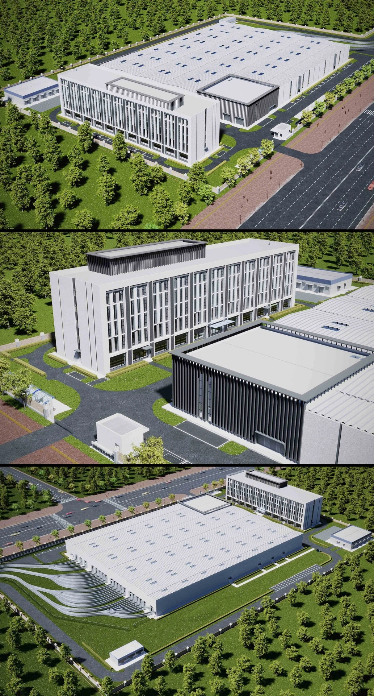

建筑可视化
济南高新环线云巴车辆基地
以车辆基地建筑与场地关系为重点，通过鸟瞰和透视画面展示建筑体量、立面与整体环境。
项目类型建筑可视化
个人职责建筑建模 / 视觉表现
使用工具AutoCAD / SketchUp / 3ds Max

项目背景
比亚迪勘察设计有限公司期间参与的建筑可视化作品，项目名称沿用原作品集。
我的工作
- 参与建筑与场地模型搭建，表达建筑体量和外立面。
- 制作鸟瞰与透视表现，辅助方案展示。
- 配合团队整理模型及效果图交付。
作品与过程
1 / 打开原图

职责与署名
团队项目；个人参与建筑建模与视觉表现，项目整体设计归原团队。